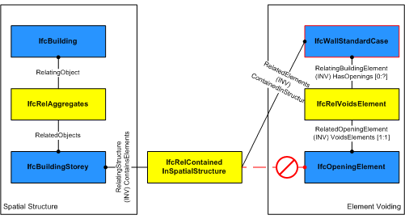
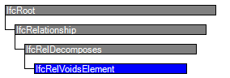

Natural language names
 | Abzug / Subtraktion von Teil aus Element - Relation |
 | Rel Voids Element |
 | Relation de percement |
| Abzug / Subtraktion von Teil aus Element - Relation |
| Rel Voids Element |
| Relation de percement |
| Item | SPF | XML | Change | Description | IFC2x3 to IFC4 |
|---|---|---|---|---|
| IfcRelVoidsElement | ||||
| OwnerHistory | MODIFIED | Instantiation changed to OPTIONAL. |
IfcRelVoidsElement is an objectified relationship between a building element and one opening element that creates a void in the element. It is a one-to-one relationship. This relationship implies a Boolean operation of subtraction between the geometric bodies of the element and the opening.
As shown in Figure 165, the insertion of a void into a wall is represented by the relationship IfcRelVoidsElement. The opening is created within the wall by IfcWall(StandardCase) o-- IfcRelVoidsElement --o IfcOpeningElement.
 |
Figure 165 — Relationship for element voiding |
HISTORY New entity in IFC1.0
| # | Attribute | Type | Cardinality | Description | C |
|---|---|---|---|---|---|
| 5 | RelatingBuildingElement | IfcElement | [1:1] | Reference to element in which a void is created by associated feature subtraction element. | X |
| 6 | RelatedOpeningElement | IfcFeatureElementSubtraction | [1:1] | Reference to the feature subtraction element which defines a void in the associated element. | X |

| # | Attribute | Type | Cardinality | Description | C |
|---|---|---|---|---|---|
| IfcRoot | |||||
| 1 | GlobalId | IfcGloballyUniqueId | [1:1] | Assignment of a globally unique identifier within the entire software world. | X |
| 2 | OwnerHistory | IfcOwnerHistory | [0:1] |
Assignment of the information about the current ownership of that object, including owning actor, application, local identification and information captured about the recent changes of the object,
NOTE only the last modification in stored - either as addition, deletion or modification. | X |
| 3 | Name | IfcLabel | [0:1] | Optional name for use by the participating software systems or users. For some subtypes of IfcRoot the insertion of the Name attribute may be required. This would be enforced by a where rule. | X |
| 4 | Description | IfcText | [0:1] | Optional description, provided for exchanging informative comments. | X |
| IfcRelationship | |||||
| IfcRelDecomposes | |||||
| IfcRelVoidsElement | |||||
| 5 | RelatingBuildingElement | IfcElement | [1:1] | Reference to element in which a void is created by associated feature subtraction element. | X |
| 6 | RelatedOpeningElement | IfcFeatureElementSubtraction | [1:1] | Reference to the feature subtraction element which defines a void in the associated element. | X |
| # | Concept | Model View |
|---|---|---|
| IfcRoot | ||
| Software Identity | Common Use Definitions | |
| Revision Control | Common Use Definitions | |
<xs:element name="IfcRelVoidsElement" type="ifc:IfcRelVoidsElement" substitutionGroup="ifc:IfcRelDecomposes" nillable="true"/>
<xs:complexType name="IfcRelVoidsElement">
<xs:complexContent>
<xs:extension base="ifc:IfcRelDecomposes">
<xs:sequence>
<xs:element name="RelatingBuildingElement" type="ifc:IfcElement" nillable="true"/>
<xs:element name="RelatedOpeningElement" type="ifc:IfcFeatureElementSubtraction" nillable="true"/>
</xs:sequence>
</xs:extension>
</xs:complexContent>
</xs:complexType>
ENTITY IfcRelVoidsElement
SUBTYPE OF (IfcRelDecomposes);
RelatingBuildingElement : IfcElement;
RelatedOpeningElement : IfcFeatureElementSubtraction;
END_ENTITY;
 EXPRESS-G diagram
EXPRESS-G diagram Link to this page
Link to this page